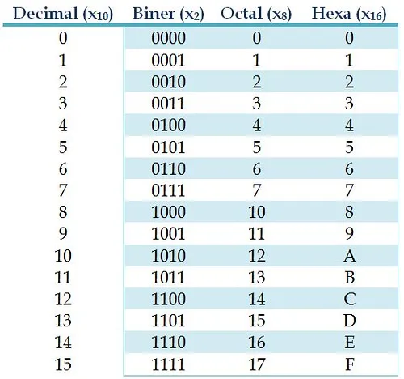
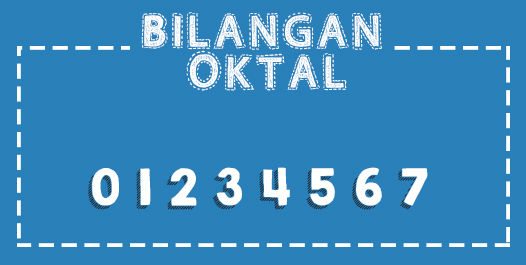
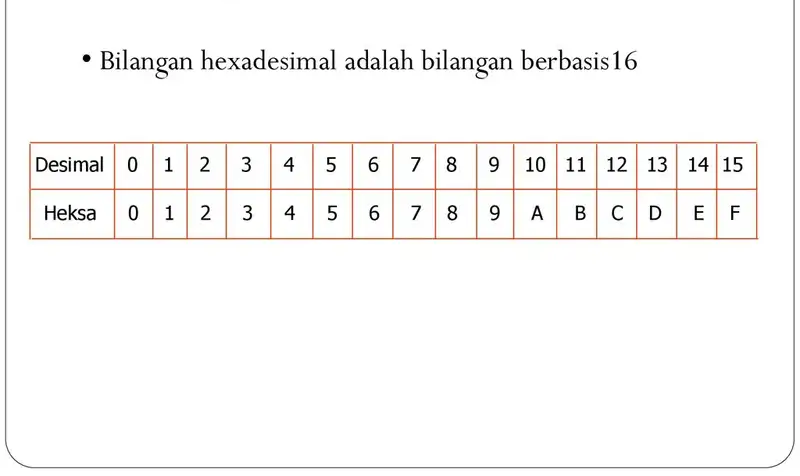

SISTEM BILANGAN
Sistem Bilangan adalah kumpulan simbol khusus yang digunakan dalam membangun sebua bilangan.
Sistem bilangan, dalam gagasan matematika, ialah sistem penulisan yang mewakili bilangan yang ditulis menggunakan bilangan, digit, atau simbol lain. Penjelasan kasarnya, sistem bilangan merupakan sistem penulisan yang menyatakan bilangan.
Sistem bilangan yang banyak dipergunakan oleh manusia adalah system biilangan desimal, yaitu sisitem bilangan yang menggunakan 10 macam symbol untuk mewakili suatu besaran.
Adapun jenis jenis system bilangan, yaitu:
Bilangan Desimal

Sistem ini menggunakan 10 macam symbol yaitu 0,1,2,3,4,5,6,7,8,dan 9. system ini menggunakan basis 10. Bentuk nilai ini dapat berupa integer desimal atau pecahan.
Bilangan Biner

Sistem bilangan binary menggunakan 2 macam symbol bilangan berbasis 2 digit angka, yaitu 0 dan 1.
Bilangan Oktal

Sistem bilangan Oktal menggunakan 8 macam symbol bilangan berbasis 8 digit angka, yaitu 0 ,1,2,3,4,5,6,7.
Bilangan Hexadesimal

Sistem bilangan Oktal menggunakan 16 macam symbol bilangan berbasis 8 digit angka, yaitu 0 ,1,2,3,4,5,6,7,8,9,A,B,C,D,Edan F Dimana A = 10, B = 11, C= 12, D = 13 , E = 14 dan F = 15 Position value system bilangan octal adalah perpangkatan dari nilai 16.